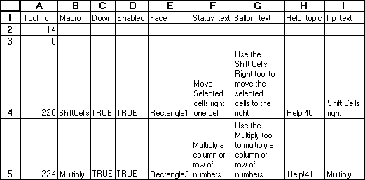

Adds error bars to the selected series in a chart. ERRORBAR.X adds bars showing the error factor for the X (category) axis and works for XY (scatter) charts only. ERRORBAR.Y adds bars showing the error factor for the Y (value) axis for all charts.
Syntax
ERRORBAR.X(include, type, amount, minus)
ERRORBAR.Y(include, type, amount, minus)
Include specifies the type of error value to include:
| Include | Type of error value |
| 1 or omitted | Plus and minus |
| 2 | Plus |
| 3 | Minus |
| 4 | None |
Type specifies the type of error bars to display:
| Type | Type of error displayed |
| 1 or omitted | Fixed amount |
| 2 | Percent |
| 3 | Multiplying factor standard deviation (default value is 1) |
| 4 | Standard error |
| 5 | Custom |
Amount is the range of error values to display. This argument depends on the value of type:
| If type is | then amount |
| 1 or omitted | Can be any number greater than 0 |
| 2 | Can be any number greater than 0 |
| 3 | Can be any number greater than or 0 |
| 4 | Not required |
| 5 | Is the positive amount for custom error bars |
Minus is the negative amount for custom error bars. Applicable only if type is 5.
Remarks
For the amount argument, standard deviation(s) can be calculated using this equation:
The standard deviation is multiplied by the value specified by amount and the error bars are placed this distance from the arithmetic mean. Therefore, these error bars are plotted along the arithmetic mean, not attached to data series.
Microsoft Excel calculates the standard error using the following equation:

Both the standard deviation and standard error functions use the following variables:
| Variable | Equals |
| s | Series number |
| i | Point number in series s |
| m | Number of series for point y in chart |
| n | Number of points in each series |
| Yi | Data value of series s and the ith point |
| Ny | Total number of data values in all series |
| M | Arithmetic mean |